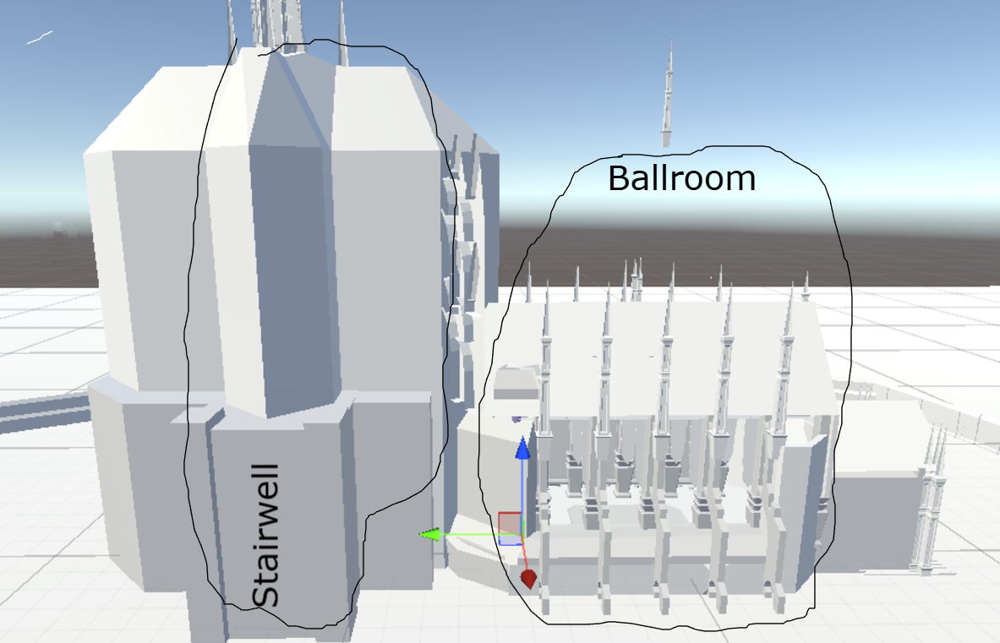

Overview
Kandra Capture is the current playable prototype mode of Cosmere Hunt, an asymmetric multiplayer stealth and social deduction game set in a Mistborn-inspired environment. Players take on the roles of Kandra infiltrators or Steel Inquisitor hunters, competing through deception, observation, and deduction rather than straightforward combat.
My Role
I designed and implemented the prototype’s core gameplay systems, match flow, interaction structure, and scenario framework. The project was built to validate whether crowd deception, evidence generation, and player-driven deduction could support a full multiplayer experience.
Core Gameplay Loop
Kandra players blend into the NPC population, move between task locations, complete objectives, and change disguises when necessary. Inquisitors patrol the environment, observe suspicious behavior, investigate physical evidence, and use combat tools to identify and eliminate hidden players.
Key Systems
- Task System: Kandra complete distributed objectives across the level rather than staying in a single safe area.
- Disguise System: Kandra consume corpses left by Inquisitors in order to assume new identities.
- Evidence & Forensics: Disguise changes leave behind bones from the previous form, creating delayed investigative clues.
- Blessing System: Kandra can gain powers such as Awareness, Potency, Presence, and Stability that alter survivability, information, and task speed.
- Hunter Tools: Inquisitors use coin stuns, knives, reveal pulses, and forensic investigation to track and eliminate infiltrators.
- Match Systems: Global task tracking, timer control, life tracking, and victory-state logic determine the outcome of each match.
Technical Focus
The prototype is systems-first. My focus was on building readable gameplay interactions and modular scenario logic rather than final polish. The project currently validates asymmetric roles, tasks, disguise and replacement, evidence generation, blessings, combat tools, and win conditions in a playable prototype state.
Design Challenges
The core challenge was balancing deception with readability. Kandra need enough freedom to blend naturally into NPC behavior, but Inquisitors still need enough information to make meaningful deductions. The design solves this by relying on behavior, environmental context, and physical evidence rather than automatic player reveals.
Level & Scenario Design
The current scenario takes place at the Noble Ball, inside a keep with spaces such as the ballroom, kitchen, dining areas, religious chamber, and prisoner holding area. Different rooms support different play conditions: crowded spaces favor blending, while quieter and more enclosed spaces increase suspicion and make evidence discovery more meaningful.
Development Status
Kandra Capture is currently playable in singleplayer prototype form and is intended to move toward LAN multiplayer first, followed by online multiplayer. The prototype is already mechanically complete enough to validate the core systems and the central stealth-investigation loop.
Prototype Environment / Level Blockout

Early blockout work for the Noble Ball environment, showing the spatial relationship between major play areas such as the ballroom and adjacent circulation spaces. This layout work was important for crowd density, sightlines, and how suspicion changes between open and enclosed areas.